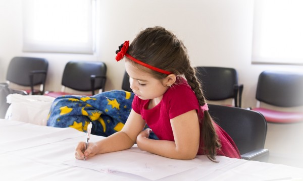

Извънкласните предмети или още наречени АЛТЕРНАТИВНО ОБРАЗОВАНИЕ известно още като нетрадиционно образование или образователна алтернатива, е общ термин, обхващащ всички нестандартни форми на обучение (за различни възрастови групи и нива).
Алтернативното образование би могло да включва обучение на лица в неравностойно положение, както и всяка друга форма на обучение, предназначено за широката публика, която използва алтернативни методи и/или философия на преподаване. AO включва учебни програми, разработени да предложат друга възможност за обучение, различна от общо приетата, когато последната не задоволява нуждите и потребностите на определена група от хора.
На всяко ниво на образованието съществува голямо разнообразие от образователни алтернативи. Те могат да се групират в пет основни категории:
| 1.Изборни предмети и кръжоци – всички извънкласни форми на обучение в рамките на дадена образователна организация. |
| 2.Алтернативни училища – държавни или частни училища със специален учебен план. |
| 3. Народно, общодостъпно образование – този вид образование възниква през XIX век, заради желанието на работещите за по-достъпно образование. |
| 4.Независими (частни) училища – това са училища, с по-гъвкава стратегия за избор на преподаватели и образователни подходи. |
| 5.Домашно образование – този вид алтернативно образование се използва от семейства, които не намират образователна алтернатива за обучението на своите деца, по религиозни, образователни или други причини. |
Има три основни цели, които всяко учебно заведение, работещо по алтернативна образователна програма, си поставя, а именно:
| 1.Обучаващите се да го посещават по собствен избор. |
| 2.Програмата да е съобразена със специфичните нужди на обучаващите се в него. |
| 3.Обучаващите се да отразяват расовите и социално-икономически особености на обществото, в което учебното заведение извършва дейността си. |